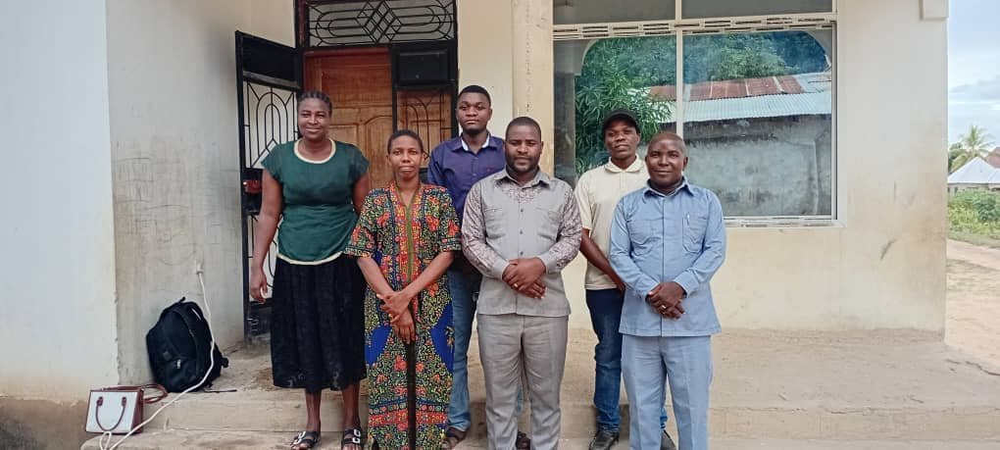

Kila mtu ana uwezo wa kuanza upya.
Tuishi Tena Foundation (TTF) inafanya kazi na wafungwa, waliowahi kufungwa, vijana walio katika mazingira hatarishi, watu waliotengwa kijamii na familia zilizoathirika na kifungo — kuanzia Dar es Salaam, Pwani na Morogoro, tukielekea kuenea nchi nzima.
Fahamu Tuishi Tena Foundation kwa undani.

Imani kwamba maisha yanaweza kuanza upya.
Tuishi Tena Foundation (TTF) ni taasisi isiyo ya kiserikali inayofanya kazi Tanzania Bara kwa lengo la kuleta mabadiliko chanya kwa wafungwa, waliowahi kufungwa, vijana walio katika mazingira hatarishi, watu waliotengwa kijamii na familia zilizoathirika kutokana na athari za kifungo.
Taasisi inaamini kwamba kila mwanadamu ana uwezo wa kubadilika, kurekebisha maisha yake na kuwa raia mwenye mchango chanya katika jamii. Kupitia elimu, ushauri nasaha, mwongozo wa kiroho, mafunzo ya ujuzi, uwezeshaji wa kiuchumi na ushirikiano wa kijamii, tunalenga kujenga maisha mapya na jamii salama.
“Uzoefu wa miaka 16 gerezani ulizaa maono ya kuanzisha taasisi inayotoa matumaini, mwongozo na fursa ya kuanza upya.”
Jamii Iliyorejeshwa
Jamii ambayo wafungwa, waliowahi kufungwa, vijana walio katika mazingira hatarishi, watu waliotengwa kijamii na familia zilizoathirika na kifungo wanaishi maisha yaliyorejeshwa, yenye uwezo na ushirikishwaji kamili katika jamii.
Kurekebisha, Kurejesha, Kuwezesha
Kurekebisha, kurejesha na kuwawezesha watu walioathiriwa na kifungo na kutengwa kijamii kupitia ushirikiano na taasisi za marekebisho, serikali, jamii, familia, sekta binafsi na wadau wa maendeleo.
Misingi isiyobadilika, hata pale maisha yanapobadilika.
Heshima kwa utu na haki za binadamu
Huruma, upendo na kukubali mabadiliko ya mtu
Uadilifu na uaminifu
Uwajibikaji na uwazi
Kutobagua kwa misingi ya hali, historia au imani
Ushirikiano na jamii na wadau
Weledi na ubora wa huduma
Kutoangalia makosa ya jana, bali uwezo wa kesho
Njia nne za kurejesha maisha.
Kila programu inashirikiana na taasisi za marekebisho, serikali, jamii na familia kufikia matokeo endelevu.

Maisha Baada ya Gereza
- Mafunzo ya mabadiliko ya fikra na tabia
- Programu ya “Maisha Baada ya Gereza”
- Ushauri nasaha wa kisaikolojia na kiroho
- Mentorship na uongozi wa maisha
Elimu kwa Jamii na Vijana
- Semina, makongamano na kampeni za elimu
- Elimu kwa vijana mashuleni na jamii
- Kampeni za amani, maadili na uwajibikaji
Ujuzi, Ajira na Mitaji
- Mafunzo ya ufundi stadi na ujasiriamali
- Kuunganisha walengwa na fursa za ajira
- Msaada wa vifaa vya kazi na mitaji midogo
Utetezi na Ushahidi
- Kliniki za msaada wa kisheria
- Tafiti kuhusu mfumo wa marekebisho
- Utetezi wa maboresho ya sera na sheria
- Uratibu wa ushirikiano wa wadau
Tunafanya kazi na watu waliopo katikati ya mabadiliko.
Tunaanzia mikoa mitatu, tukielekea nchi nzima.
Kwa mujibu wa Katiba ya Taasisi (Kifungu cha 4 na 37), TTF inafanya kazi Tanzania Bara na inajenga Vitengo vya Uratibu wa Urejeshaji Kimkoa (RRUs) hatua kwa hatua kadri shughuli zinavyokua. Awamu ya kwanza inajikita katika mikoa mitatu:

Dar es Salaam
Jiji kuu lenye idadi kubwa ya waliowahi kufungwa wanaorejea kwenye jamii. Hapa TTF inajikita katika ushauri nasaha, mafunzo ya ujuzi na kuunganisha walengwa na fursa za ajira mijini.

Pwani
Mkoa wa jirani na Dar es Salaam wenye jamii nyingi za vijijini na mwambao. Kazi kuu ni urejeshaji wa familia, elimu ya kuzuia uhalifu na uwezeshaji wa kiuchumi kwa vijana.

Morogoro
Mkoa wenye fursa kubwa za kilimo na ujasiriamali vijijini, unaotoa nafasi ya kipekee ya mafunzo ya ufundi stadi na miradi ya kujitegemea kwa waliowahi kufungwa na familia zao.
Mpango wa Kuenea Kitaifa
RRU Rollout — Kifungu 37Dar es Salaam, Pwani na Morogoro
Uanzishwaji wa programu za msingi, ushirikiano wa awali na Jeshi la Magereza, jamii na taasisi za dini.
Mikoa ya Karibu
Uanzishwaji wa Vitengo vya Uratibu wa Urejeshaji Kimkoa (RRUs) katika mikoa jirani, kwa kushirikiana na wadau wa kikanda.
Tanzania Bara Nzima
Uwepo wa RRU katika kila mkoa wa Tanzania Bara, kama ilivyoainishwa katika Katiba ya Taasisi.
Tupate kwenye ramani.
Njia tatu za kushirikiana na TTF.
Wadau wa Kawaida
NGO za wilaya, CBOs, taasisi za dini, kliniki za msaada wa kisheria na vituo vya ushauri vinavyofanya kazi moja kwa moja na wafungwa, waliowahi kufungwa na familia zao.
Wadau Washirika
Vikundi vya jamii na taasisi za wilaya, mkoa au kitaifa zinazounga mkono kazi za urejeshaji ingawa hazijikiti moja kwa moja na walengwa wa TTF.
Wadau Kimkakati
Mashirika ya kimataifa, wizara na taasisi za serikali, vyuo, vyombo vya habari na kampuni kupitia programu za uwajibikaji kwa jamii (CSR).
Mfumo wa utawala unaozingatia uwajibikaji.

Msaada wako unaweza kubadilisha maisha ya mtu, na jamii nzima.
Iwe wewe ni taasisi ya dini, NGO, kampuni, taasisi ya serikali au mtu binafsi — kuna nafasi ya kushirikiana na Tuishi Tena Foundation.
Wasiliana na Tuishi Tena Foundation.
Maelezo ya Mawasiliano
Kauli ya Mwisho
“Hatuangalii makosa ya jana; tunaamini uwezo wa kujenga kesho bora.”
Tuishi Tena Foundation ni jina linalotokana na dhamira ya kuanza upya — jua linapochomoza baada ya usiku. Hivyo ndivyo tunavyoiona kazi yetu: fursa mpya, kila siku, kwa kila mtu.
Mchango wako unaleta mabadiliko halisi.
Kwa sasa, michango inaweza kufanyika kwa kuwasiliana nasi moja kwa moja kupitia simu au barua pepe. Tutakupa taarifa za akaunti ya benki au njia za malipo ya simu zinazofaa kwa mchango wako, iwe wa kifedha au vifaa.
Pesa za Simu (Mobile Money)
M-Pesa, Tigo Pesa au Airtel Money. Wasiliana nasi kupata namba sahihi ya kuchangia.
Uhamisho wa Benki
Wasiliana nasi kupata taarifa za akaunti ya benki ya Tuishi Tena Foundation.
Malipo Mtandaoni (Kadi)
Kuchangia moja kwa moja kwa kadi ya benki (Visa/Mastercard) mtandaoni.